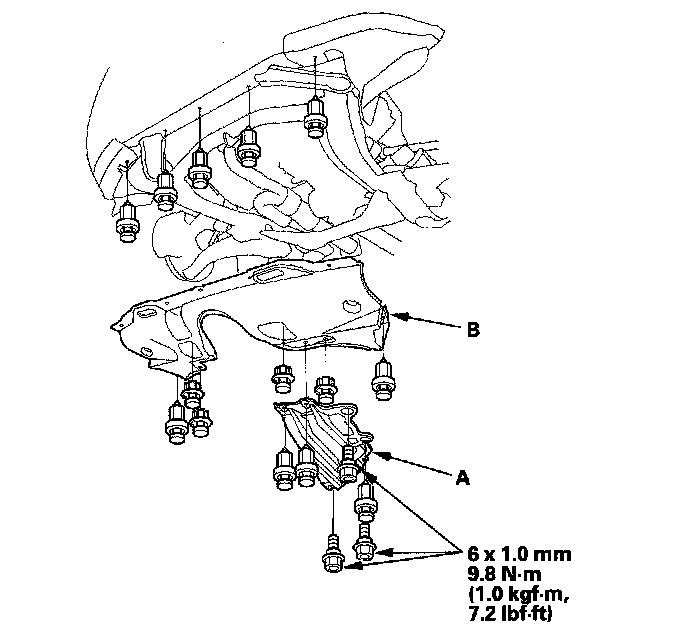
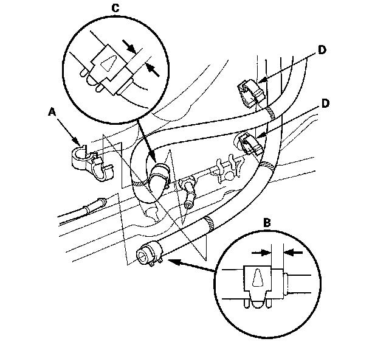
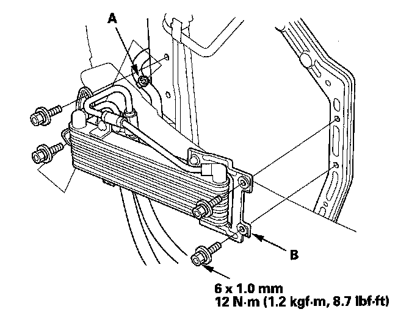

Removal and Replacement
ATF Cooler Replacement1. Raise the vehicle, and make sure it is supported securely.
2. Remove the transmission undercover (A) and splash shield (B).

3. Remove the front bulkhead cover, and remove the front bumper.
4. Remove the hose clamp (A) and remove the ATF cooler inlet hose (B) and outlet hose (C) from the hose clamps (D) then disconnect the hoses from the ATF cooler lines.

5. Remove the power steering fluid hose clamp (A) from the ATF cooler mounting bracket.

6. Remove the ATF cooler (B) and replace it. Install the new ATF cooler.
7. Install the power steering fluid hose clamp on the bracket.
8. Slide the ATF cooler inlet hose over the ATF cooler line until the hose end contacts with the bulge, and secure the hose with the clip at 6-8 mm (0.2-0.3 in.) from the hose end.
9. Slide the ATF cooler outlet hose over the ATF cooler line until the hose end contacts with the bulge, and secure the hose with the clip at 2-4 mm (0.1-0.2 in.) from the hose end.
10. Secure the cooler hoses with the hose clamps at the marks on the hoses.
11. Install the hose clamp at the mark.
12. Install the front bumper and install the front bulkhead cover.
13. Install the splash shield and transmission undercover.
14. Check the ATF level.